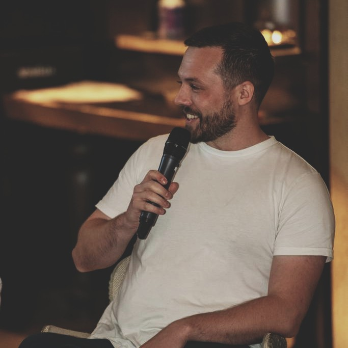
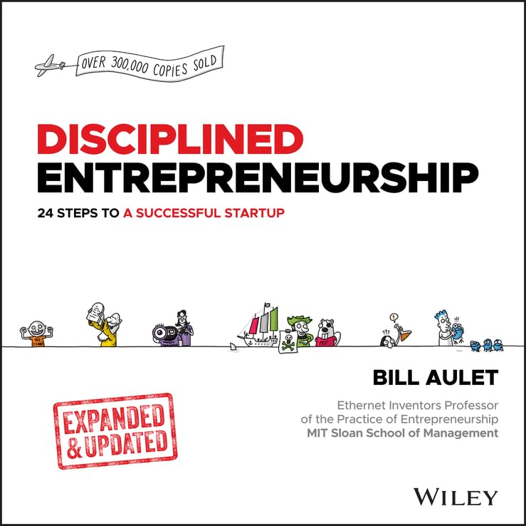
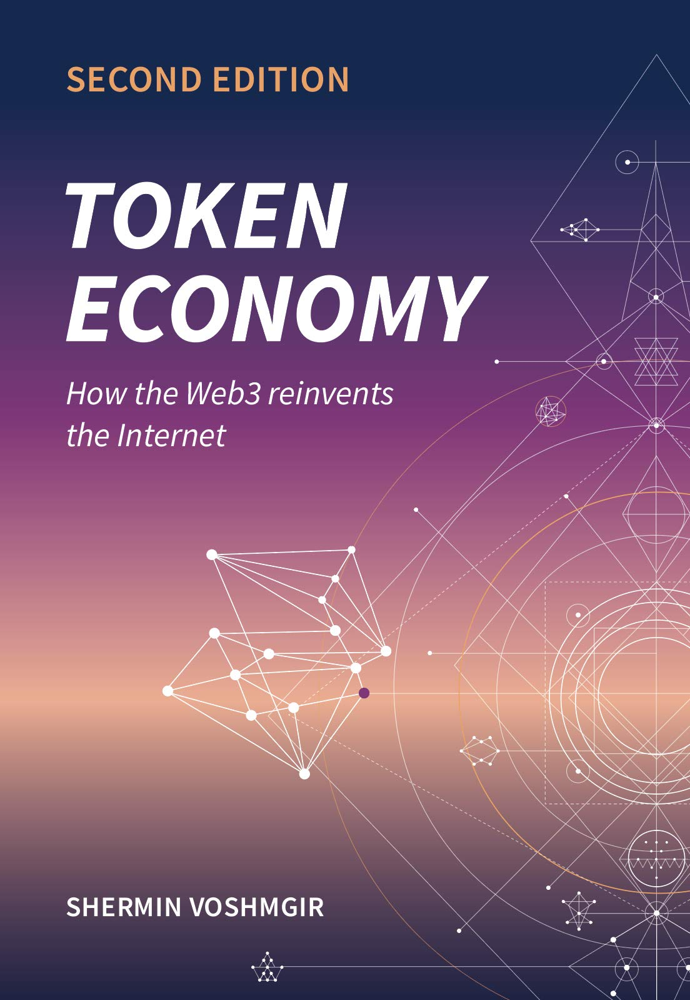
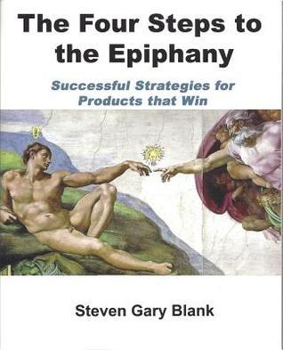
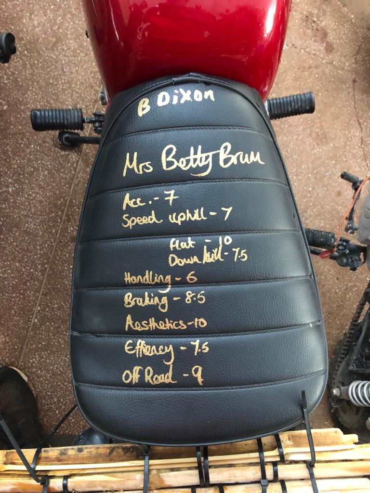
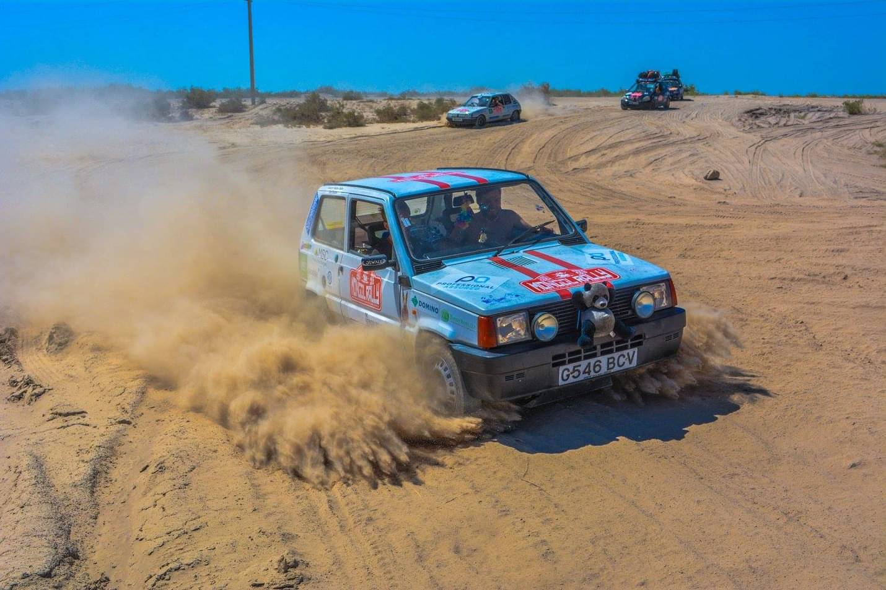

Kash
COO & Interim CTO
- Full operational ownership of a social native prediction marketplace
- Leading product, technology, operations, and finance simultaneously
- Building and scaling the company from the ground up

From investment banking and hedge funds through cards, payments, and stablecoins to L1 blockchains and AI-powered prediction markets. Building and scaling companies across the full spectrum of financial technology.

From co-inventing payment systems at JPMorgan to running a company as COO, I've built and scaled organisations across fintech, blockchain, and AI. I lead across the full picture: product, technology, operations, finance, marketing, sales, partnerships, and governance, with the strategic vision and technical depth to execute at every level. My passions are building, leading, and learning, and I bring all three to everything I do.
I run companies and divisions from the ground up. Organisational structure, financial controls, operational processes. I build what scales and own the full picture.
I architect products and platforms that create market position. Deep fluency in distributed systems, blockchain, and AI means I make technology decisions that are both strategically sound and technically rigorous.
I build the engines that take products to market: ecosystem partnerships, community growth, sales strategy, and stakeholder management. I've grown ecosystems from zero to 45K+ users and $150M+ in value.
Building & Operating Companies in Web3 and Fintech
Full operational ownership of a social native prediction marketplace, leading across product, technology, operations, finance, and partnerships.
Entrepreneurship advisory helping founders launch, run, and scale their companies, from business model validation and fundraising through to operational excellence and market expansion.
Leading blockchain strategy and implementation for cross-chain infrastructure solutions
Led vision and development of an L1 from concept to $150M ecosystem
Led technical strategy for UK's stablecoin through successful acquisition
Led product and technology for innovative fintech payments and loyalty platform
Led technical vision for SMS-based banking platform serving rural areas
Enterprise Financial Technology Experience
Developed real-time payment solutions for major global banks and optimised high-demand transaction systems at scale
Developed hedge fund operations product covering back, middle, and front office, with user-driven iterative improvements
Led R&D projects focused on customer acquisition and developed user engagement systems
Co-invented patented real-time B2B payment system and developed global payment infrastructure
Computer Science & Computing
Computer Science - Russell Group
COO & Interim CTO
Chief Ecosystem Officer
Chief Product & Technology Officer
Chief Technology Officer
Through DD Ventures, I provide specialised advisory services leveraging my deep expertise in entrepreneurship to help founders successfully launch, run, and scale their companies and products.
Learn more at DD Ventures
Speaker on Tokenomics
Tokenomics Design & StrategySpeaker on Tokenomics
Tokenomics Design & StrategyExploring how autonomous AI agents could revolutionize business interactions by creating trustless systems for commerce and collaboration.
Read on Medium → Dec 2024Exploring how three powerful tools - blockchain, artificial intelligence, and the Internet of Things - are coming together in ways that make each of them more useful than they are alone.
Read on Medium → Nov 2024An exploration of how DAOs, despite their promise of radical decentralisation and democratic ethos, are not immune to the inadvertent slide towards autocracy.
Read on Medium →
Bill Aulet

Shermin Voshmgir

Steve Blank
Classic car expedition across continents, covering 12,000 miles through 20 countries.
Adventure through diverse landscapes of India, from bustling cities to remote villages.

Epic journey across Morocco's varied terrains, from desert dunes to Atlantic coast.

Interested in discussing executive leadership, company operations, or strategic advisory?